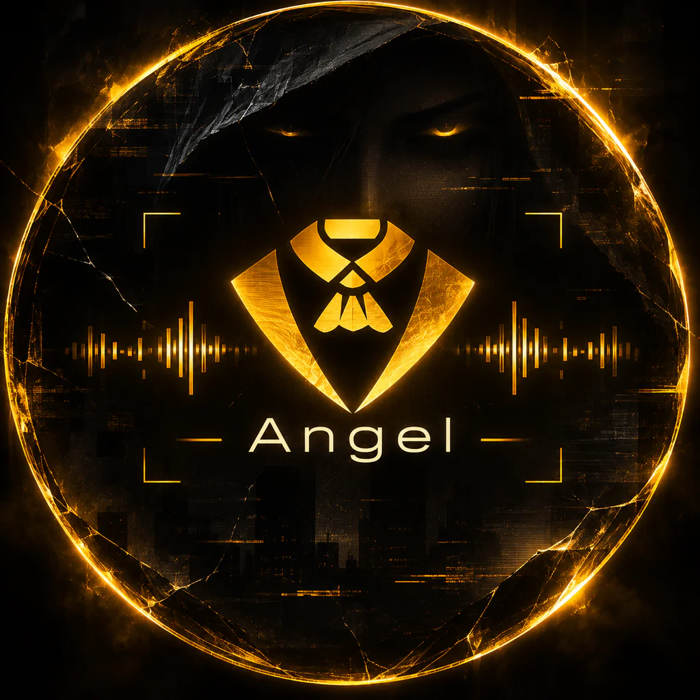
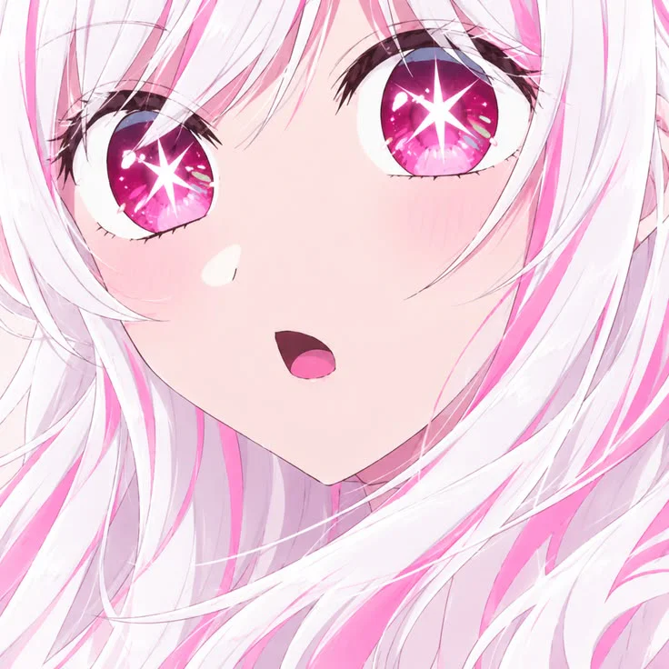
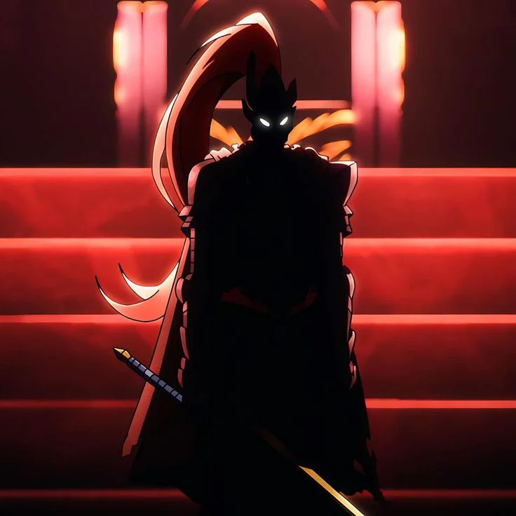

ASI · TOPLULUKAngel
Kendi tarzı var. İşini de bilir.
Sunucu yönetimi, rol düzeni, ses kanalları ve müzik için asi ama yardımsever bir yardımcı.
- Moderasyon ve kayıt araçları
- Emojiyle rol panelleri
- Ses kanalı ve müzik özellikleri
ÜÇ BOT · ÜÇ AYRI KARAKTER
Topluluk, oyun ve moderasyon için tasarlanan Angel, Lumi ve Tron aynı evrende; her biri kendi tarzında.
Botları keşfetKADRO
İhtiyacına göre birini seç; istersen üçünü birlikte kullan.

ASI · TOPLULUKKendi tarzı var. İşini de bilir.
Sunucu yönetimi, rol düzeni, ses kanalları ve müzik için asi ama yardımsever bir yardımcı.

NEŞELİ · OYUNBiraz oyun, bolca keşif.
Günlük ödüller, hayvan koleksiyonu, mini oyunlar ve arkadaşlarla paylaşılacak tatlı anlar.

CİDDİ · GÜVENLİKKurallar net. Sunucu güvende.
Moderasyon ve koruma araçlarıyla sunucuda olup biteni düzenli tutmaya yardımcı olur.
BİRLİKTE DAHA İYİ
Angel topluluğa yardım eder, Lumi oyunları canlandırır, Tron düzeni korur. Özellikler sunucu kurulumuna göre değişebilir.
Asi ruh, sağlam yardımcı. Sunucu araçları, ses kanalları ve müzik tek yerde.
Topla, geliştir, takım kur. Günlük ilerleme ve oyunlarla sunucuya küçük bir macera ekle.
Net kurallar, kayıtlı işlemler ve moderasyon araçlarıyla sunucu düzenini destekle.
ANGEL · LUMI · TRON
Bot davet bağlantıları ve destek sunucusu bilgileri hazır olduğunda burada yer alacak.
Gizlilik bilgileri